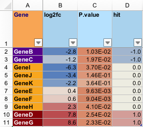

Export a data.frame to Excel xlsx format
writeOpenxlsx(x, file, sheetName = "Sheet1", append = FALSE, headerColors = c("lightskyblue1", "lightskyblue2"), columnColors = c("aliceblue", "azure2"), highlightHeaderColors = c("tan1", "tan2"), highlightColors = c("moccasin", "navajowhite"), borderColor = "gray75", borderPosition = "BottomRight", highlightColumns = NULL, numColumns = NULL, fcColumns = NULL, lfcColumns = NULL, hitColumns = NULL, intColumns = NULL, pvalueColumns = NULL, numFormat = "#,##0.00", fcFormat = "#,##0.0", lfcFormat = "#,##0.0", hitFormat = "#,##0.0", intFormat = "#,##0", pvalueFormat = "0.00E+00", numRule = c(1, 10, 20), fcRule = c(-6, 0, 6), lfcRule = c(-3, 0, 3), hitRule = c(-2, 0, 2), intRule = c(0, 100, 10000), pvalueRule = c(1e-05, 0.01, 1), numStyle = c("#EEECE1", "#678ADF", "#5673AA"), fcStyle = c("#4F81BD", "#EEECE1", "#C0504D"), lfcStyle = c("#4F81BD", "#EEECE1", "#C0504D"), hitStyle = c("#4F81BD", "#EEECE1", "#C0504D"), intStyle = c("#EEECE1", "#DF8A67", "#AA6346"), pvalueStyle = c("#AA6346", "#DF8A67", "#EEECE1"), doConditional = TRUE, doCategorical = TRUE, colorSub = NULL, freezePaneColumn = 1, freezePaneRow = 2, doFilter = TRUE, fontName = "Arial", fontSize = 12, minWidth = 8, maxWidth = 40, autoWidth = TRUE, wrapHeaders = TRUE, headerRowMultiplier = 5, keepRownames = FALSE, rownameHeader = "rowName", verbose = FALSE, ...)
| x | data.frame to be saved to an Excel xlsx file. |
|---|---|
| file | a valid path to save an Excel xlsx file. If the file exists,
and |
| sheetName | character value less with a valid Excel xlsx worksheet name. At this time (version 0.0.29.900) the sheetName is restricted to 31 characters, with no puntuation except "-" and "_". |
| headerColors, columnColors, highlightHeaderColors, highlightColors, borderColor, borderPosition | default values for the Excel worksheet background and border colors. As of version 0.0.29.900, colors must use Excel-valid color names. |
| highlightColumns, numColumns, fcColumns, lfcColumns, hitColumns, intColumns, pvalueColumns | integer vector referring the column number in the input data.frame |
| numFormat, fcFormat, lfcFormat, hitFormat, intFormat, pvalueFormat | character string with valid Excel cell formatting, for example "#,##0.00" defines a column to use comma-delimited numbers above one thousand, and display two decimal places in all numeric cells. |
| numRule, fcRule, lfcRule, hitRule, intRule, pvalueRule | numeric vector
|
| numStyle, fcStyle, lfcStyle, intStyle, hitStyle, pvalueStyle | character
vector |
| doConditional | logical indicating whether to apply conditional formatting of cells, with this function only the background cell color (and contrasting text color) is affected. |
| doCategorical | logical indicating whether to apply categorical
color formatting, of only the background cell colors and contrasting
text color. This argument requires |
| colorSub | character vector of R colors, whose names refer to
cell values in the input |
| freezePaneColumn, freezePaneRow | integer value of the row or column before which the Excel "freeze panes" is applied. |
| doFilter | logical indicating whether to enable column filtering by default. |
| fontName, fontSize | default font configuration, containing a valid Excel font name, and a font size in Excel point units, respectively. |
| minWidth, maxWidth, autoWidth | numeric minimum, maximum size
for each Excel cell, in character units as defined by Excel,
used when |
| wrapHeaders | logical indicating whether to enable word wrap
for column headers, which is helpful when |
| headerRowMultiplier | integer value, the row height of the first
header row in Excel, as a multiple of subsequent rows. This argument
is helpful when |
| keepRownames | logical indicating whether to include
|
| rownameHeader | character value used as the column header when
|
| verbose | logical indicating whether to print verbose output. |
| ... | additional arguments are passed to |
This function is a minor but useful customization of the
openxlsx::saveWorkbook() and associated functions, intended
to provide some pre-configured formatting of known column
types, typically relevant to statistical values, and
in some cases, gene or transcript expression values.
There are numerous configurable options when saving an Excel worksheet, most of the defaults in this function are intended not to require changes, but are listed as formal function arguments to make each option visibly obvious.
If colorSub is supplied as a named vector of colors, then
by default text values will be colorized accordingly, which
can be especially helpful when including data with categorical
text values.
This function pre-configures formatting options for the following column data types, each of which has conditional color-formatting, defined numeric ranges, and color scales.
integer values, where numeric values are formatted
without visible decimal places, and the big.mark="," standard
is used to help visually distinguish large integers. The color
scale is by default c(0, 100, 10000).
numeric values, with fixed number of visible decimal places, which helps visibly align values along each row.
numeric type, a subset of "int" intended when data is flagged with something like a "+1" or "-1" to indicate a statistical increase or decrease.
P-value, where numeric values range from 1 down near zero, and values are formatted consistently with scientific notation.
numeric fold change, whose values are expected to range from 1 and higher, and -1 and lower. Decimal places are by default configured to show one decimal place, to simplify the Excel visual summary.
numeric log fold change, whose values are expected to be centered at zero. Decimal places are by default configured to show one decimal place, to simplify the Excel visual summary.
character and undefined columns to be highlighted with a brighter background color, and bold text.
For each column data type, a color scale and default numeric range is defined, which allows conditional formatting of cells based upon expected ranges of values.
A screenshot of the file produced by the example is shown below.

Other jam export functions: applyXlsxCategoricalFormat,
applyXlsxConditionalFormat
# set up a test data.frame set.seed(123); df1 <- data.frame( Gene=paste0("Gene", LETTERS[2:11]), log2fc=rnorm(10)*5, `P-value`=1/sample(((10:50)/10)^3, 10)); df1$hit <- sign(df1[,2]) * (abs(df1[,2]) >= 1 & df1[,3] < 0.03); # apply sort df1 <- mixedSortDF(df1, byCols=c(4,2,3)); # set of categorical colors for genes colorSubGene <- nameVector( rep(c("purple4","orange","red4"), c(2,6,2)), df1$Gene); df1;#> Gene log2fc P.value hit #> 1 GeneB -2.8023782 0.010273691 -1 #> 2 GeneC -1.1508874 0.019742167 -1 #> 8 GeneI -6.3253062 0.037037037 0 #> 9 GeneJ -3.4342643 0.145793847 0 #> 10 GeneK -2.2283099 0.364431487 0 #> 4 GeneE 0.3525420 0.009631777 0 #> 5 GeneF 0.6464387 0.009042245 0 #> 7 GeneH 2.3045810 0.041002091 0 #> 3 GeneD 7.7935416 0.025442703 1 #> 6 GeneG 8.5753249 0.023323615 1writeOpenxlsx(file="/Users/wardjm/test.xlsx", sheetName="sheet1", append=FALSE, x=df1, colorSub=colorSubGene, highlightColumns=1, pvalueColumns=3, lfcColumns=2, hitColumns=4, freezePaneRow=2, freezePaneColumn=2);